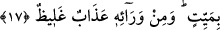
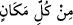

korkutmak amacıyla su, önce mübhem olarak zikredilmiş, sonra da “irin” kelimesiyle
beyân edilmiştir. Cehennemde bunca azab türü varken bunun özellikle zikredilmesi bu
suyun en şiddetli azab türlerinden olduğuna delâlet eder.
Bu sıvıya “su” denilmesi, cehennemde suya karşılık olması sebebiyledir.
Bu ifâdenin ‘Zeyd, aslandır’ ifâdesi kabilinden olması da câizdir. Bu takdirde su
gerçek mânâsında kullanılmış olup “irin şeklinde su” demektir. Nitekim Ebu’l-Leys bu
görüştedir.
Bir hadiste şöyle buyrulur: “Kim dünyâdan sarhoş olarak ayrılırsa, kabre de sarhoş
olarak girer, kabrinden de sarhoş olarak diriltilir. Cehenneme sarhoş olarak
götürülmeleri emredilir. Orada öyle bir kaynak vardır ki ondan kusmuk ve kan akar.
İşte gökler ve yer durdukça onların yiyeceği ve içeceği budur!”[9]
17. Onu yudumlamaya çalışır, fakat boğazından geçiremez ve her yandan ona
ölüm geldiği halde yine ölemez. Bunun ardından da çetin bir azab vardır.
“Onu” irin suyunu “yudumlamaya çalışır.” Bu ifâde açıklama yapmak için getirilmiş
bir başlangıç cümlesidir (isti’nâf-ı beyânî). Mukadder bir soruya cevaptır. Sanki: ‘Peki
bu inatçı zorba bu suyu ne yapacak?’ diye sorulmuş ve cevap olarak: ‘Onu yutmaya
çalışır…’ denilmiştir.
Bu inatçı zorbaya susuzluğun galip gelmesi ve harâretin vücûdunu tamâmen kaplaması
yüzünden bu cehennem suyunu, çok acı, çok sıcak ve leş gibi koktuğu için bir kerede
değil birkaç kerede yutmaya çalışır.
“Fakat boğazlarından geçiremez.” Yâni yutmak bir tarafa bırakın yutmaya
yaklaşamaz bile. Aksine boğazına takılır, ikide bir yutkunarak içebilir. Böylece bir
harâret ve susuzluk, bir de bu halde o irini içmekten dolayı azâbı artıp uzar.
“__WORD__ içilen şeyin boğazdan kolayca akıp gitmesidir. Nefsin onu kabûl edip
etmemesi, boğazdan aşağı hiç gitmeyeceği anlamına gelmez.
Bir hadiste buyrulur ki: “O su kendisine yaklaştırıldığı zaman ondan tiksinir. İyice
yaklaştırılınca da yüzünü pişirip başının derilerini döker. İçtiğinde ise bağırsaklarını
delip arkasından çıkar.”[10]
“Ve her yandan ona ölüm” yâni ölüm sebebi olan sıkıntı ve elemler “geldiği” altı
yönden onu kuşattığı “halde yine de ölemez.” Yâni yine de tam mânâsıyla ölüp
bunlardan kurutulup da rahata eremez.
“
(her yandan)” ifâdesi, her yönden demektir. Ya da kıl dipleri ve ayak